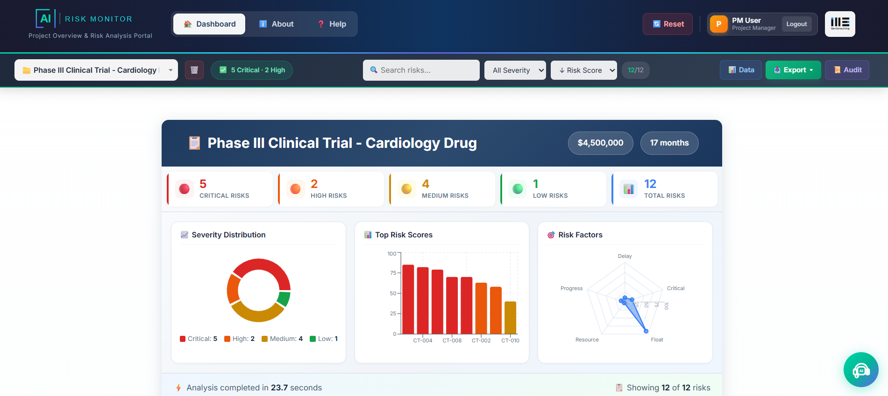

1. Overview & Key Features
PM Risk Monitor is an AI-powered project risk analysis tool using OpenAI's GPT-4o-mini to identify and mitigate schedule risks. It evaluates activities against 5 risk factors and provides objective risk scoring.
Key Features
| Feature | Description |
|---|
| 🤖 AI Risk Analysis | Automated risk scoring (0-100) using ChatGPT against 5 risk factors |
| 📊 Dashboard | Interactive charts: pie, bar, and radar charts for risk visualization |
| 💡 AI Insights | Executive summaries with situation analysis and recommendations |
| 🎯 Mitigation | AI-generated recovery plans (Conservative, Moderate, Aggressive) |
| 📧 Email Alerts | Send risk notifications to stakeholders via EmailJS |
| 📄 PDF Reports | Export professional risk reports with jsPDF |
| 💬 AI Chat | Natural language interface for project queries |
| 📜 Audit Trail | Complete logging of all user actions |

Figure 1: Main application dashboard
2. Quick Start Guide
- Load Data: Upload CSV or select a sample project
- Run Analysis: Click "Run AI Risk Analysis" button
- Review Results: Explore dashboard, charts, and risk cards
- Take Action: Generate insights, create mitigation plans, send alerts, or export reports
Start with a sample project to explore features before uploading your own data.
System Requirements
- Browser: Chrome, Firefox, Edge, or Safari (latest)
- Internet: Required for AI features
- Screen: 1280x720 minimum, 1920x1080 recommended
3. Data Fields Reference
PM Risk Monitor uses a comprehensive field structure organized into 8 categories. Understanding these fields helps you prepare data and interpret results.
📋 1. Activity Info
| Field | Description | Example |
|---|
| Activity_ID | Unique identifier for the activity | SD-001, WP-2.1 |
| Activity_Name | Descriptive name of the activity | Backend Core Development |
| Work_Package | Work package or phase grouping | WP-DEV, Phase-2 |
📅 2. Schedule
| Field | Description | Example |
|---|
| Planned_Start | Planned start date | 2025-02-17 |
| Planned_Finish | Planned end date | 2025-03-21 |
| Planned_Duration | Planned duration in days | 25 |
| Actual_Start | Actual start date (if started) | 2025-02-22 |
| Actual_Finish | Actual finish date (if completed) | N/A |
| Remaining_Duration | Days remaining to complete | 17 |
📊 3. Baseline
| Field | Description | Example |
|---|
| Baseline_Start | Original planned start date | 2025-02-17 |
| Baseline_Finish | Original planned finish date | 2025-03-21 |
| Baseline_Duration | Original planned duration | 25 |
💡 Baseline fields track original plan vs. current schedule to identify schedule slippage.
📈 4. Progress
| Field | Description | Example |
|---|
| Percent_Complete | Completion percentage (0-100) | 35 |
| Status | Current activity status | in-progress, completed, not-started |
🔗 5. Dependencies
| Field | Description | Example |
|---|
| Predecessor_ID | Activities that must finish first | SD-003;SD-004 |
| Successor_ID | Activities dependent on this one | SD-009 |
| Dependency_Type | Type of dependency relationship | FS, SS, FF, SF |
Dependency Types: FS = Finish-to-Start (most common), SS = Start-to-Start, FF = Finish-to-Finish, SF = Start-to-Finish
👥 6. Resources
| Field | Description | Example |
|---|
| Resource_ID | Assigned resource identifier | DEV-001, John Smith |
| Role | Resource role/position | Senior Developer |
| FTE_Allocation | Resource allocation % (100 = full-time) | 140 (over-allocated) |
| Resource_Max_FTE | Maximum FTE capacity | 1.5 |
| Skill_Tags | Required skills for the activity | Backend;Java;Spring |
Allocation > 100% indicates over-allocation - a leading indicator of delays and burnout.
⚠️ 7. Risk Data
| Field | Description | Example |
|---|
| Probability | Risk probability (0.0 to 1.0) | 0.60 (60%) |
| Delay_Impact_days | Potential delay in days if risk occurs | 8 |
| Cost_Impact_of_Risk | Financial impact in currency | 35000 |
EMV (Expected Monetary Value) = Probability × Cost_Impact_of_Risk
Example: 0.60 × $35,000 = $21,000 EMV
4. CPM Schedule Fields Explained
Critical Path Method (CPM) fields are used in project scheduling to determine activity timing flexibility. These values are expressed in project working days, not calendar dates.
📅 CPM Analysis Fields
| Field | Full Name | Description |
|---|
| ES | Early Start | Earliest day the activity can start |
| EF | Early Finish | Earliest day the activity can finish (ES + Duration - 1) |
| LS | Late Start | Latest day activity can start without delaying project |
| LF | Late Finish | Latest day activity can finish without delaying project |
| Total_Float_days | Total Float | Schedule flexibility = LS - ES (or LF - EF) |
| On_Critical_Path | Critical Path | Boolean: true if Float = 0 (no flexibility) |
Understanding Float (Slack)
Float is the amount of time an activity can be delayed without affecting the project end date.
Project Timeline (in days):
Day 0 -------- Day 25 -------- Day 50 -------- Day 75
Example 1: Critical Path Activity (Float = 0)
├── ES: 0 EF: 25 LS: 0 LF: 25 Float: 0d
│ └── ⚡ NO flexibility - any delay impacts project!
│
Example 2: Non-Critical Activity (Float = 5)
├── ES: 10 EF: 20 LS: 15 LF: 25 Float: 5d
│ └── ✅ Can start anywhere between Day 10-15
Why Float = 0 is Critical
| Scenario | ES | EF | LS | LF | Float | Impact |
|---|
| ⚡ Critical Path | 0 | 25 | 0 | 25 | 0d | Any delay = Project delay |
| ✅ Has Buffer | 10 | 20 | 15 | 25 | 5d | 5 days of flexibility |
| ⚠️ Low Float | 30 | 45 | 32 | 47 | 2d | Very limited flexibility |
Key Insight: When ES = LS and EF = LF, the activity has zero float and is on the Critical Path. Any delay to this activity directly delays the entire project.
Real Example from Your Data
Activity: Backend Core Development (SD-006)
| ES: 0 | EF: 25 | LS: 0 | LF: 25 | Float: 0d |
⚡ This activity is on the Critical Path - it must start on Day 0 and finish by Day 25, or the entire project will be delayed.
5. Upload & Project Management
Upload Options
| Button | Action |
|---|
| 📁 Upload CSV | Upload your project schedule CSV file |
| 📥 Template | Download CSV template with all required fields |
| 📊 Sample Data | Load pre-built sample project |
Sample Projects Available
- 🏥 Hospital EMR System - Healthcare IT with HIPAA compliance
- 🏦 Banking Portal - Financial services digital transformation
- 🛒 E-Commerce Platform - Retail online shopping platform
- 📱 Mobile App - iOS/Android application development
- 🏗️ Infrastructure - IT infrastructure modernization
Header Navigation
| Element | Action |
|---|
| 📊 Dashboard | Main risk analysis view |
| ⚙️ Settings | Configure preferences |
| ❓ Help | View documentation |
| 📋 Data | View raw project data |
| 📥 Export | Export PDF, Excel, or CSV |
| 📜 Audit | View action log |
| 🔄 Reset | Clear all data |
6. AI Risk Analysis
The core feature of PM Risk Monitor uses OpenAI's GPT-4o-mini to evaluate each activity against 5 risk factors.
Running Analysis
- Load project data (CSV or sample)
- Click 🚀 Run AI Risk Analysis
- Wait 5-15 seconds for completion
- Review results in dashboard
5 Risk Factors
| Factor | Weight | Description |
|---|
| Schedule Delay | 30% | Days delayed relative to planned duration |
| Critical Path Impact | 25% | Impact on project completion if delayed |
| Float Consumption | 20% | How much schedule buffer has been used |
| Resource Overallocation | 15% | Resources assigned above 100% |
| Progress Deviation | 10% | Actual vs expected progress |
Severity Levels
| Severity | Score | Action |
|---|
| 🔴 Critical | 70-100 | Immediate intervention required |
| 🟠 High | 50-69 | Urgent attention needed |
| 🟡 Medium | 30-49 | Monitor closely |
| 🟢 Low | 0-29 | Continue normal monitoring |
If OpenAI is unavailable, a local fallback algorithm provides consistent results.
7. Dashboard & Views
Dashboard Charts
| Chart | Purpose |
|---|
| 🥧 Pie Chart | Severity distribution (Critical/High/Medium/Low) |
| 📊 Bar Chart | Top 8 highest-risk activities |
| 🎯 Radar Chart | Average scores across 5 risk factors |
Card View vs List View
| View | Best For |
|---|
| 🔲 Card View | Visual scanning, quick severity identification |
| ≡ List View | Detailed comparison, many activities |
Risk Detail Panel
Click any risk card/row to open the detail panel with:
- Risk score and severity badge
- Activity details (duration, status, progress)
- Risk factors radar chart
- Action buttons: Generate Insight, Simulate Mitigation, Email, Export
8. AI Features
AI Insights
Click ✨ Generate AI Insight to get:
- Executive summary for stakeholders
- Risk assessment and root causes
- Business impact analysis
- Prioritized recommendations
Mitigation Strategies
Click 🎯 Simulate Mitigation to generate 3 recovery options:
| Strategy | Cost | Timeline | Risk Reduction |
|---|
| 🟢 Conservative | Low | 2-4 weeks | 10-25 points |
| 🟡 Moderate | Medium | 1-2 weeks | 25-40 points |
| 🔴 Aggressive | High | Days | 40-60 points |
AI Chat Assistant
Click the floating chat button (bottom-right) to ask questions like:
- "What are the top 5 risks?"
- "Which activities are delayed?"
- "Send report to pm@company.com"
- "What should I prioritize today?"
Email Alerts
Click 📧 Share via Email to send risk notifications to stakeholders with pre-formatted content.
9. Export & Reports
Export Formats
| Format | Contents | Best For |
|---|
| 📄 PDF | Cover page, executive summary, charts, tables | Stakeholder presentations, compliance |
| 📊 Excel | All risk data in structured columns | Further analysis, custom calculations |
| 📋 CSV | Raw comma-separated data | Database imports, system integrations |
Audit Trail
Click 📜 Audit to view logged actions:
- Project loads and analysis runs
- Risk views and AI insight generations
- Email sends and report exports
- Mitigation strategy applications
Export audit log as CSV for compliance documentation.
10. Quick Reference
Keyboard Shortcuts
| Key | Action |
|---|
| Escape | Close any modal or panel |
| Enter | Submit forms / Send chat message |
| Tab | Navigate between elements |
Color Legend
| Color | Severity | Score | Action |
|---|
| Red | Critical | 70-100 | Immediate intervention |
| Orange | High | 50-69 | Urgent attention |
| Yellow | Medium | 30-49 | Monitor closely |
| Green | Low | 0-29 | Normal monitoring |
Common Workflows
| Task | Steps | Time |
|---|
| Analyze Project | Upload CSV → Run Analysis → Review Dashboard | 2-5 min |
| Get Risk Insight | Click Risk → Generate AI Insight | 30-60 sec |
| Create Mitigation | Click Risk → Simulate Mitigation → Apply Strategy | 1-2 min |
| Send Alert | Click Risk → Share via Email → Send | 1-2 min |
| Export Report | Click Export → Select Format (PDF/Excel/CSV) | 10-30 sec |
Troubleshooting
| Issue | Solution |
|---|
| Analysis not starting | Check project data is loaded. Refresh page. |
| AI features not working | Verify internet connection. Fallback will be used. |
| Email not sending | Check email format (must include @domain.com) |
| Data not importing | Verify CSV format matches template |
Pro Tip: Use the AI Chat for quick queries like "How many critical risks?" instead of navigating through the interface.